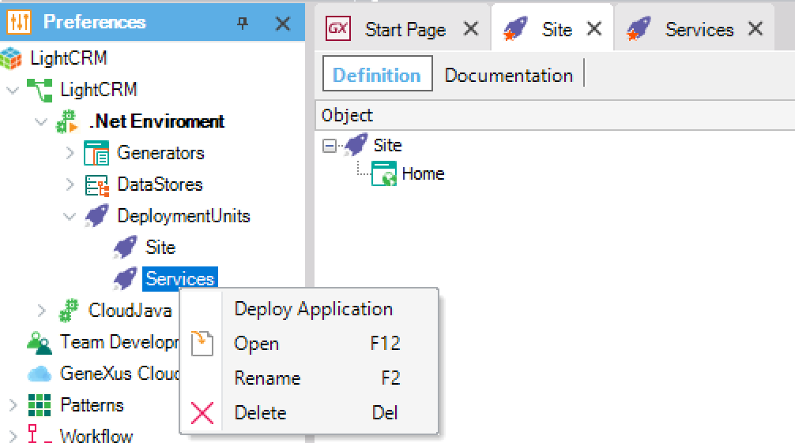

Defines the set of objects to be deployed together. Only Main objects, File objects, and Business Process Diagram objects are available for selection in a Deployment Unit. To deploy the objects defined by a Deployment Unit, you may use the Application Deployment tool. Typically, for an application that has a front office, back-end, and Services layer, you create a Deployment Unit for each, but you are free to define the ones you need. SampleIn the LightCRM Sample, clearly you need to deploy the Home (LightCRM Web), the Services required for the LightCRM Android and iOS App, and the Android and iOS App itself. If you want to deploy the Web and the Services separately (for example, to https://example.com/Main and https://example.com/Services), you can define two Deployment Units: The 'Site' with the Home object (and its called objects) and the 'Services' defined by the LightCRM object.  Then, deploy each of them. AvailabilitySince Genexus 15 Upgrade 10. |